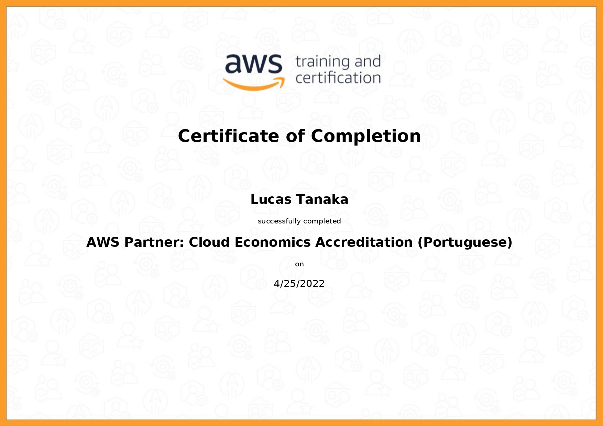
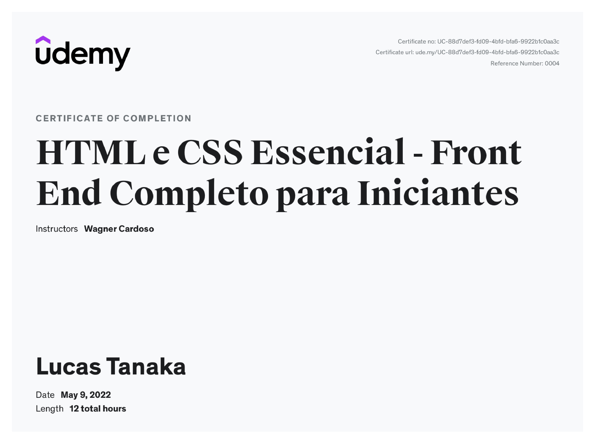

Lucas Martins Tanaka
Engenheiro de Software
Contato
Email: lucastanakinha100@hotmail.com / lucastanaka789@gmail.comCelular: (43) 98452-1229
Linkedin: https://www.linkedin.com/in/lucas-tanaka-11956a202/
Resumo
Comecei com programação ao entrar na universidade, achei super interessante.Gosto de varias linguagens de programação como por exemplo Python, pretendo seguir na linguagem Python ou com as linguagens web (HTML, CSS, JS). Tenho experiência com SQL e um pouco da AWS.
Mesmo meu foco sendo Python pretendo aprender varias outras linguagens e também aprimorar as que eu já tenho conhecimento.
Experiência
Tata Consultancy Service (10 meses - atual) - Trainee
Como trainee comecei em um pequeno projeto utilizando api e também a
AWS e o banco dynamoDB, utilizando a linguagem python e por enquanto
continuo estudando python
Estagiário (março de 2022 - junho de 2022) - TCS
Como estagiário fiz cursos e projetos nas seguintes linguagens: Java, SQL,
HTML e CSS. Também fiz alguns estudos sobre lógica de programação e
cursos AWS.
Integrada Cooperativa Agroindustrial (novembro de 2019 - outubro de 2020) - Aprendiz
Como jovem aprendiz eu trabalhava como auxiliar de escritório em geral,
eu ajudava com notas fiscais, organização das notas, criação etc. Também
adquiri muita experiência com conversação com o cliente
Formação acadêmica
Universidade Tecnológica Federal do Paraná
Bacharelado em Engenharia, Engenharia de Software (2020 - 2023)
Certificados
Partner: Accreditation (Tchnical) (Portuguese)

AWS Partner: Cloud Economics Accreditation (Portuguese)
HTML e CSS
Conceitos e Modelagem de Banco de Dados